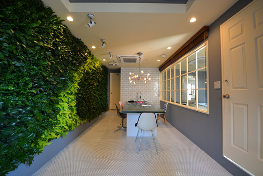
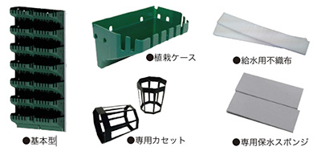

Earth Wall Stage
都市空間のなかでも屋内垂直面の緑化は無機質な景観に
安らぎと癒しを与えてくれる画期的なコンセプトです。
人と地域が自然に融合することを大切に実績を積み重ねてきた
当社の屋内壁面緑化システム「アースウォール・ステージ」は、
「みどりとともに」を屋内でも実践できるシステムです。

アースウォール・ステージは屋内のわずかなスペースにも対応でき、底面潅水式で壁面上段から簡単に水やりができます。
市販の植物を使用することができるので、屋内の景観を美しく保てるよう自由な植物選択が出来ます。植物が生き生きと生育出来るステージなのです。

| サイズ | W500×H1000×D160（ 0.5 ㎡） |
|---|---|
| 重量 | 総重量（植栽後）約30 ㎏ |
| セット内容 | パネル（1枚）/専用カセット（28個）/専用保水スポンジ（28枚）/給水用不織布（28 個）/ 潅水部材（1 式） |
| 素材 | アングル枠：アルミ/ボトルナット：ステンレス製/ジョイントパネル等：ポリプロピレン |
| 備考 | パネルには植栽ケースが設置されています。 |
観葉植物を中心とした色鮮やかな植栽が可能です。
ポトス
セローム
タマシダ
ドラセナ
プテリス
ユニット式によりさまざまなシーンに合った緑化が可能です。小規模やちょっとしたスペース、インテリアと一体にさせるなど様々なシーンで植物を楽しむことができます。
インテリアと組み合わせることで、緑溢れるオフィス環境を実現
絵画のような壁面緑化で屋内の 雰囲気をお洒落にすることが できます。
壁一面に植物を配置することで潤いのある緑の空間を創出します。模様をつけるなどの多彩なデザインも可能です。
ステージの仕組みの画像